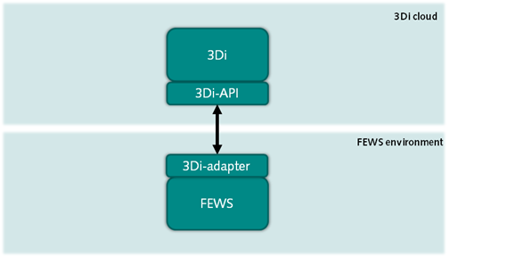
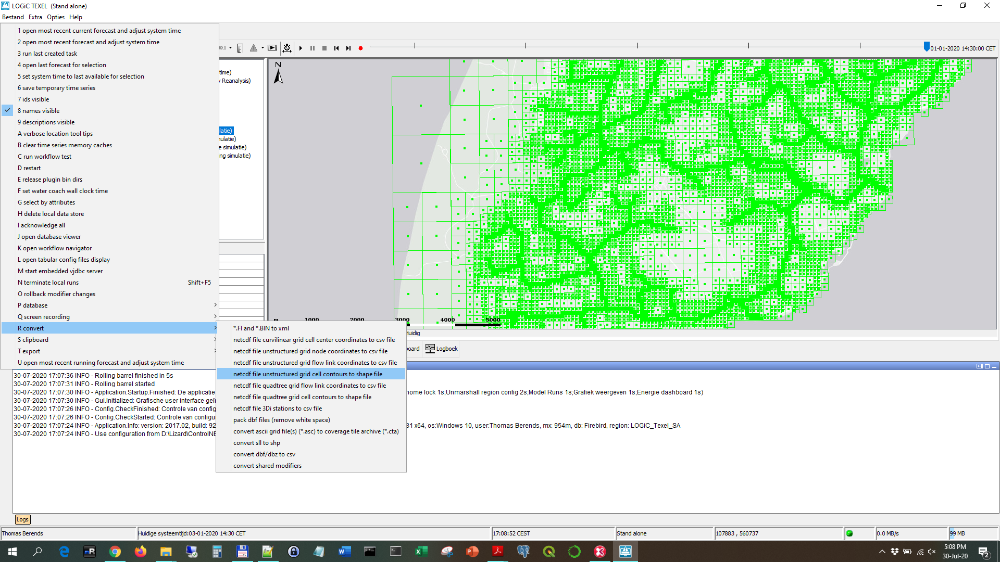

FEWS-3Di integration
Introduction
Since 2019 the 3Di Hydrodynamic Simulation Software contains a new setup of the 3Di API. This API version 3 is developed with the goal to fully support interaction with other applications, from setting up a calculation to retrieving the simulation results. There are already some applications which interact with 3Di;.e.g. ESRI ArcGIS and the 3Di livesite.
In the field of operational water management models are widely used to simulate the hydrological and hydrodynamic system. Real-time control systems interact autonomously with models and use the simulation results to determine the desired control of structures. Delft-FEWS, developed by Deltares, is one the most common software packages in operational water management.
For the integration of Delft-FEWS and 3Di an adapter is build. This adapter provides functionalities to interact with 3Di from an operational Delft-FEWS system.
This document describes the functional and technical design of the FEWS-3Di integration and gives detailed information about the configuration in FEWS.
Procedure
The following procedure describes the steps to start a simulation, set the initial condition, add forcings, follow the progress and retrieve the results. The authorization for interaction with the 3Di API is based on a 3Di service account. This account is allowed to start simulations autonomously from external applications. The credentials will be part of the configuration of the operational system. All models available to the user of the 3Di account can be configured to run operationally.
Select 3Di model
Simulations can be started with 3Di models that are available to the user. A list of the available models can be found through the API or through https://management.3di.live/models. Every 3Di model has a unique identifier, which needs to be submitted when creating a new simulation.
Create simulation
To start a simulation, a simulation resource has to be created first. This simulation resource is created by sending simulation metadata through the API. The data consists of, among others, the unique identifier for the 3Di model that should be used, the organisation the simulation is requested for, the timespan of the simulation et cetera. After creating a simulation, an unique identifier is obtained. This identifier is used to add initial conditions and/or forcings to the model simulation.
Add initial conditions (optional)
After a simulation has been created, initial conditions, like water levels or a saved flow state of a previous simulation can be added. The API provides a list of previous saved flow states for a 3Di model. These saved states all have an unique identifier which can be used to add them to the simulation. The simulation unique identifier needs to be submitted for every initial condition.
Add forcings (mandatory)
The API provides specific endpoints for different forcings/events. These events are coupled to the simulation by submitting them with the unique identifier of the simulation. Every event needs to be added via a separate API call. The following events/forcings endpoints are currently available:
Rain
Sources and sinks
Laterals
For now adding at least one event is mandatory.
Start simulation
After the (optional) initial conditions are set and events are added to the simulation, the simulation is ready to run. A simulation is started by the adapter posting a new ‘start’ action to the /simulations/{id}/actions/ API endpoint. After a simulation has been started, it cannot be started again. If you want to re-run the simulation you need to re-create it.
Follow progress
The API provides a /simulations/{id}/progress/ endpoint to check the progress of the simulation. It shows how far the calculation is in terms of the last calculated timestep and the total progress as a percentage.
Check simulation state
After (and during) the simulation, the latest state of the simulation can be retrieved via the api endpoint /simulations/{id}/states/latest/. After a successful run the latest state is ‘finished’ (or something similar). If the simulation crashed, the latest state is ‘crashed’ and provides information about the crash, if available.
Get results
Results can be retrieved via the /simulations/{id}/results/timeseries/ endpoint. This endpoint allows to provide filtering parameters for getting time series of a simulation. Under the hood it is going to provide a subset of the filtering/subset options provided by Threedigrid (https://threedigrid.readthedocs.io/en/latest/api.html#filtering). Threedigrid is a Python package created and maintained by Nelen & schuurmans for interacting with 3Di model administration and 3Di model simulation results. The timeseries endpoint will provide access to time series of threedicore entities like calculation points, lines, grid cells et cetera. The adapter makes it possible to easily retrieve the 1D or 2D results.
Get saved states identifiers
The simulation end state is available via the state/latest endpoint. An overview of all created saved states files is presented in the simulation end state including the unique identifiers of the saved state that can be used to set the initial state of an upcoming simulation via the API.
Implementation
General information
In this section the configuration of a 3Di model in FEWS is explained. On this topic basic knowledge is assumed about coupling models in FEWS. Otherwise general information can be found on the public wikipedia of Deltares (see link). The sections below will focus on the aspects specific to the 3Di coupling, e.g. the conditions, grid definition and general adapter settings.
Starting points
Models coupled to FEWS systems are commonly installed on FEWS servers and can be run on the local machine. 3Di is a fully cloud-based and the simulations are performed in the cloud. This implies FEWS needs to interact with the 3Di cloud. One of the advantages of cloud modelling is that the FEWS servers don’t need to be equipped with extensive computer resources. Also model maintenance is more straightforward, as a modeller can easily adjust the model in his personal working environment and upload it as a new revision. It’s need to be noted that as a3Di model is running in the cloud the Forecasting Shell Servers of the FEWS systeem need to be connected to the internet. The 3Di API is available at https://api.3di.live/.
Grid definition
The quad-tree technology of 3Di uses a irregular grid to simulatie the water flow in two dimensions. The irregular grid can be displayed in the FEWS system and project e.g. the water depths through time. Below an example is shown. The grid can be created from a netcdf output file by using a function below the F12 menu in a FEWS client.
The function generates a shapefile from the netcdf which can be used in a grid definition. The shapefile can be added to the MapLayerFiles of the FEWS configuration and the grid can be defined in the Grids.xml. Make sure also the location is defined in the Locations.xml. For the definition of the location the actual coordinates are not relevant. Below an example is given of a grid definition.
<irregular locationId="3DI-TEXEL">
<esriShapeFile>
<file>grid_2D_open_water.shp</file>
<geoDatum>Rijks Driehoekstelsel</geoDatum>
<x>%X%</x>
<y>%Y%</y>
</esriShapeFile>
</irregular>
The defined locationId can be used in the GeneralAdapter and GridDisplay for the interaction with the 3Di model and presentation of the simulation results.
General adapter
The general adapter of a 3Di simulation will consist of three steps:
Preprocessing
Defining the run information
Export forcings as input for the model
Defining the cold/warm initial conditions
Start and follow the simulation
Status
(Error) Logmessages
Postprocessing
Import time series of 1D elements (e.g. discharges of structures)
Import the calculated water depths of the 2D grid
Installation of adapter
The adapter is developed as a python package in Python3 and available in the Python Package system pip. The package can easily be installed using the (windows) command: pyhon pip install fews-3di
As usual with installations of python modules, its recommended to install the package in a python virtual environment (also known as venv). This prevents interference with other python installations and packages.
More information can be found at: https://pypi.org/project/fews-3di/